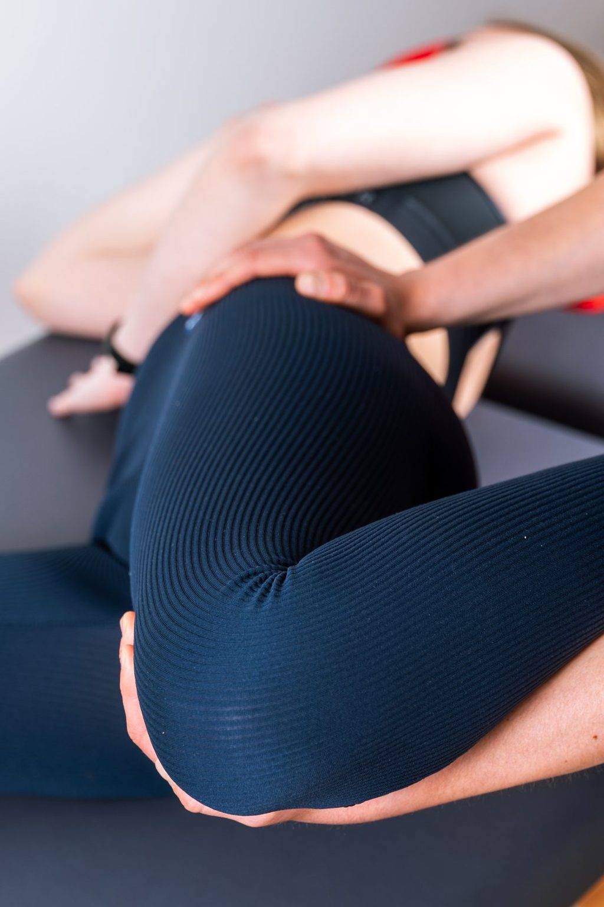
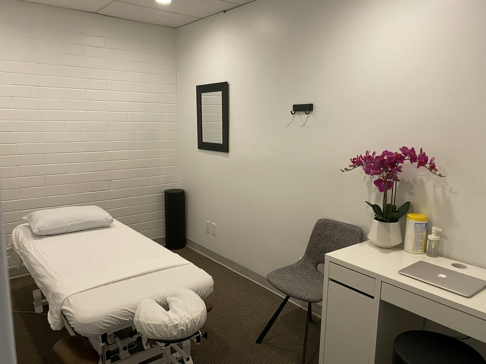

Beckenbodentherapie Innsbruck
Beckenbodenphysiotherapie – in Ruhe, auf Augenhöhe.
Die Beckenbodenmuskulatur stabilisiert deine Körpermitte und wirkt bei essenziellen Körperfunktionen mit. Sie ist für jeden Menschen wichtig – für Frauen wie für Männer, in jedem Alter. Wenn sie Beschwerden macht, begleiten wir dich diskret, warm und fachlich fundiert.

Worum es geht
Ein Muskel, der viel trägt.
Über den Beckenboden spricht man selten – dabei arbeitet er ständig mit. Ihn zu verstehen ist oft schon der erste Schritt.
Stabilität
Der Beckenboden stabilisiert die Körpermitte – beim Stehen, Heben, Laufen und Atmen.
Körperfunktionen
Er wirkt mit bei Blase, Darm und Sexualität – also bei Dingen, die uns ganz persönlich betreffen.
Für jeden Menschen
Ob schwanger, nach der Geburt, nach einer Operation oder einfach mit Beschwerden: Der Beckenboden betrifft alle.

Deine Therapeutin
Anna Gassner, MSc
Studierte Physiotherapeutin mit Spezialisierung auf den Beckenboden. Sie arbeitet mit einem ganzheitlichen Ansatz – sie betrachtet nicht nur einen Muskel, sondern dich als ganzen Menschen.
„Ich begleite dich auf dem Weg, deinen eigenen Körper besser kennenzulernen und zu verstehen. Ich freue mich darauf, dir zu helfen, dein volles Potential auszuschöpfen.“
- Beckenbodenphysiotherapie (MSc)
- Orthopädische & traumatologische Rehabilitation
- Blackroll-Trainerin & Faszienyoga
- Therapieklettern
- Manuelle Lymphdrainage
Indikationen
Wobei wir dich begleiten.
Vieles davon ist verbreiteter, als man im Alltag hört. Nichts davon musst du einfach hinnehmen – und für nichts davon musst du dich schämen.
Schwangerschaft & danach
- Schwangerschaft & Rückbildung
- Rektusdiastase
Blase & Darm
- Verschiedene Arten der Inkontinenz
- Beschwerden bei der Blasen- und Darmentleerung
- Verdauungsbeschwerden
Senkung & Bauchwand
- Senkungszustände
- Leistenbrüche
Spannung & Schmerz
- Beckenboden-Hypertonus (zu hohe Spannung)
- Sexuelle Dysfunktionen
- Schmerzen beim Geschlechtsverkehr
Rund um Operationen
- Vor und nach einer Adenomektomie
- Vor und nach einer Prostatektomie
Für Männer
Auch Männer haben einen Beckenboden.
Und auch bei Männern kann er Beschwerden machen – etwa rund um eine Prostata-Operation. Beckenbodentherapie ist kein „Frauenthema“, sondern Physiotherapie für einen Muskel, den alle haben. Bei uns sprichst du darüber sachlich, vertraulich und ohne Umwege.
- Vorbereitung vor einer Prostatektomie oder Adenomektomie
- Begleitung nach der Operation
- Inkontinenz in verschiedenen Formen
- Beckenboden-Hypertonus & Schmerzen
- Sexuelle Dysfunktionen
- Leistenbrüche

Untersuchung & Therapie
Erst verstehen, dann üben.
Damit die Übungen wirklich zu dir passen, braucht es einen genauen Befund. Du bestimmst dabei das Tempo.
Ankommen & Befund
Wir sprechen über deine Beschwerden und deinen Alltag – in einem ruhigen, geschlossenen Raum.
Untersuchung
Möglich ist auch eine interne Palpation, also eine Tastuntersuchung. Wir erklären dir vorher genau, wie sie abläuft – ob sie stattfindet, entscheidest du.
Maßgeschneiderte Übungen
Aus dem Befund entstehen Übungen, die genau auf dich abgestimmt sind – für die Praxis und für zuhause.
Überweisung & Verrechnung
Unkompliziert wie jede Physiotherapie.
Überweisung
Eine normale Überweisung zur Physiotherapie (z. B. PT03, Heilgymnastik etc.) gilt auch für die Beckenbodentherapie. Eine eigene Überweisung brauchst du nicht.
Verrechnung
Die Beckenbodentherapie wird wie Physiotherapie verrechnet. Wir sind Wahltherapeut:innen – du reichst die Rechnung bei deiner Kasse ein.
Rückerstattung
Anteilig, laut bisheriger Angabe ca. 55 € pro Therapiestunde [BITTE PRÜFEN].
Termin vereinbaren
Der erste Schritt ist ein Anruf.
Am Telefon reicht das Stichwort „Beckenboden“ – alles Weitere besprichst du in Ruhe vor Ort mit Anna Gassner.
Amraser Straße 3, 1. Stock · im Städtischen Hallenbad Amras · Anfahrt